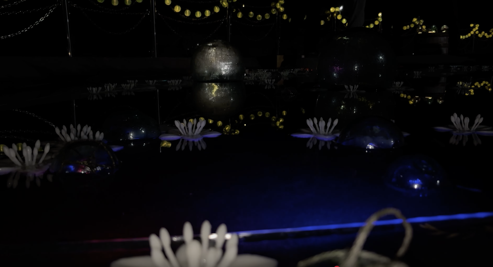
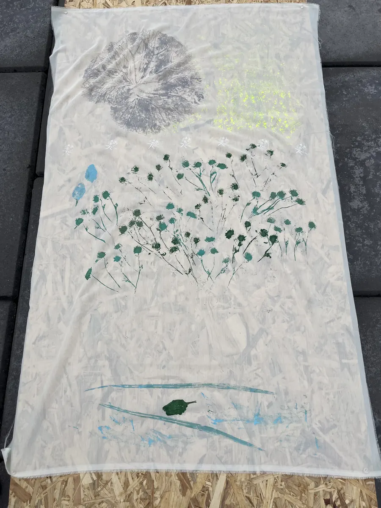
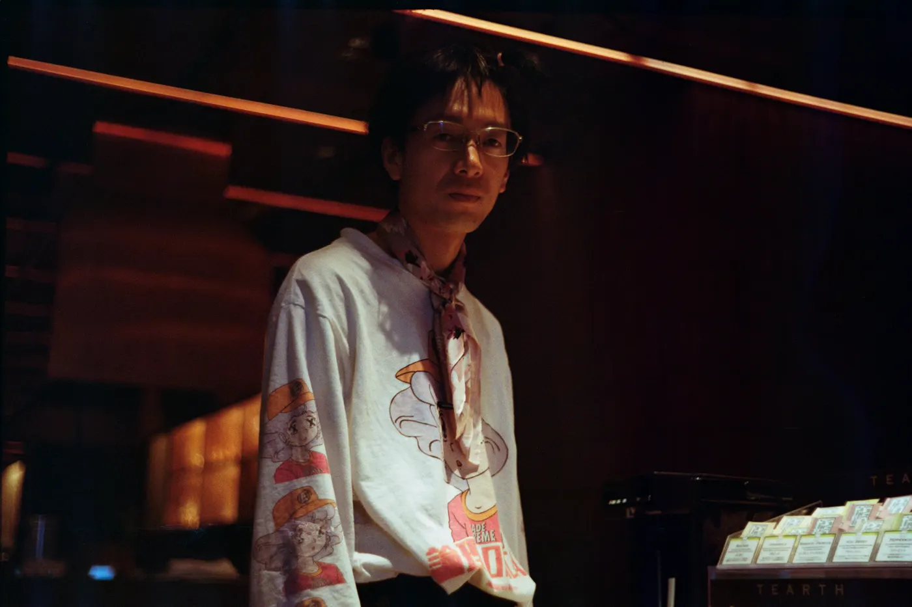

Artist / Maker / Researcher子安
子安
竜司
季節とともに生きる。
ロボット、道具、衣服、空間をつくっています。
Selected Projects
現場の条件を観察し、素材と技術を選び、試作し、公開の場で確かめる。
01 / 05お花の池・
02 / 05 03 / 05
03 / 05秋の庭・
04 / 05
ヴァナキュラーな
05 / 05
真菰の
すべてのプロジェクトを見る →
お花の池・
小鳥の森
人の移動を仮想生命の振る舞いへ変換し、池と森の光と音として現実空間へ返した夜間インスタレーション。
Details ↗OHANA-ROBOT
畝をまたぎ、バリカンで雑草を低く保つ対話型の選択的機械除草ロボット。効率化より、里山で人と機械が暮らす方法を研究する。
Details ↗秋の庭・
鹿おどし
塩ビ管の鹿おどしへ鹿角、鈴、ガラス浮き玉とLEDを接続。毛綱毅曠の建築内部に、音と光が反復する秋の庭を組んだ。
Details ↗ヴァナキュラーな
稲作ロボット
土地の地形、水、手に入る材料に合わせて組み替えられる稲作道具。暮らしの可変性に機械を合わせる試作。
Details ↗真菰の
昼寝道具
真菰の根元側にある硬い約20cmを選び、五本の縄を束ねて敷物、枕、草履を制作。土地の草を身体が休む道具へ変えた。
Details ↗Now / 2026
京都で、料理、茶、香り、祭礼を学ぶ。
Research / In progress仮設の茶室と
仮設の茶室と
森の香り
京都で得た料理と茶の視点を、第二の故郷である弟子屈へ持ち帰る。針葉樹の蒸留香、流木、花、菓子、映像による屋外空間を構想中。


About Ryuji技術から自然へ。
技術から自然へ。
自然から、暮らしの
手ざわりへ。
1999年岐阜県生まれ。北海道大学大学院農学院でスマート農業を研究し、2023年度未踏IT人材発掘・育成事業スーパークリエータ。農村でのロボット開発を起点に、現在は土地の素材、手仕事、身体、空間へ制作領域を広げています。「りゅっぢ」名義でも活動。
プロフィールと経歴 →